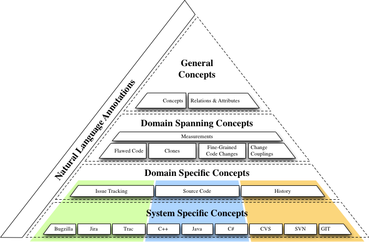
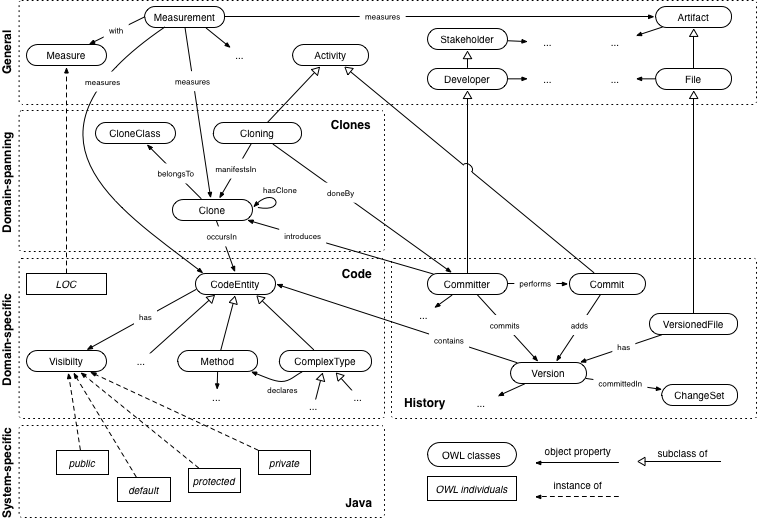

Welcome to se-on.org. This Web page hosts different OWL ontologies that describe concepts in the context of software engineering, software evolution and software maintenance. The ontologies were created and are maintained by members of the Software Evolution and Architecture Lab of the Department of Informatics of the University of Zurich.
Overview
The acronym SEON stands for Software Evolution ONtologies and represents our attempt to formally describe knowledge from the domain of software evolution analysis and mining software repositories. SEON consists of multiple ontologies, for example to describe stakeholders, activities, artifacts, and the relations among all of them. The ultimate goal is to facilitate the implementation of tools that help software engineers to manage software systems over their entire life-cycle.
The 5 Layers of SEON
The figure below presents an overview of the different layers of SEON. Its most distinguishing feature is, compared to other ontologies related to the domain of software evolution, its strict organization into different levels of abstraction.

In the following, we explain each of the layers that comprise our pyramid of ontologies. We focus on a few examples and do not provide a detailed description for every concept defined in SEON. Instead, we explain the general structure of our ontology pyramid and the rationale behind its design. Interested readers are invited to browse our OWL definitions online. At the end of this section, we give an example on how the different layers can be used in conjunction with each others to describe knowledge in a concrete analysis scenario, namely the analysis of the evolution of code clones in a software system.
General Concepts
The pyramidion, i.e., the top layer, is comprised of domain-independent or general concepts, the attributes that describe them, and the relations between the concepts.
Concepts are modeled by OWL classes. Instances of classes are OWL individuals. OWL datatype properties represent attributes, and OWL object properties the relations between concepts. The first ones link individuals to data values, whereas the latter ones link individuals to individuals. To better differentiate terms, we underline OWL classes in this section. A dotted underline denotes individuals and a dashed underline is used for properties.
Classes in the top-layer relate to concepts omnipresent in software evolution. Examples are Activity, Stakeholder, or File. We also defined a set of datatype properties for generic attributes, such as hasSize or createdOn. They are domain-independent; files, program execution stack traces, but also project teams have a size. Similarly, requirement documents, bug reports, or mailing list entries are attributed a creation date.
SEON also defines a more extensive set of domain-independent object properties. These properties are fundamental to many applications, as relations between "things" are paramount for most analyses in software evolution. On this level of abstraction, there is for example the concept of authorship, as any artifact in software evolution has one or several authors, denoted by the object property hasAuthor. Our ontology also has an object property called dependsOn that generalizes many different relations in the software evolution domain. Specializations of dependsOn therefore can range from other domain-independent properties, such as hierarchical relationships (i.e., a parent-child relationship), to more domain-specific ones, e.g., dependencies between requirements or static source code dependencies. Such domain-specific properties, however, are specified in lower layers of SEON, as sub-properties of higher-level ones. Another domain-independent object property defines the abstract notion of similarity between two individuals. The concept of similarity, again, is universal. It applies to source code (a.k.a. "code clones"), as well as to issues (a.k.a. "bug duplicates") and many other artifacts. What "similar" actually means in a specific case, however, is then up to the fact extractors to decide when they instantiate SEON models.
What is the benefit of having defined the abstractions described above? First, we as human beings are comfortable with thinking in categories|this capability develops as early as within the first half year of our lives. Categorization and taxonomizing things help us to understand the complex domain of software evolution. Second, such abstractions enable us to build flexible, largely domain-independent tools to support many different facets of software evolution activities.
The pyramidion currently hosts the following ontologies (right-click and choose "Save as..." or "Open in New Tab/Window..."):
- The SEON General Concepts. Defines abstract concepts, such as stakeholders and activities. These concepts are meant to be extended by the lower layers of SEON.
- The SEON Measurement Ontology. Defines the abstract notion of measurements and measures, as well as related concepts. Concrete measures are defined in lower levels of the ontology pyramid.
- The SEON Annotations. Defines SEON-specific annotations. Currently unused - mainly a placeholder for future development.
Domain-spanning Concepts
The second-highest layer of SEON defines domain-spanning concepts. These concepts are less abstract than the general concepts. They describe knowledge that spans a limited number of subdomains, e.g., version control systems and source code in the case of our change coupling ontology. Change couplings describe implicit relationships between two or more software artifacts that frequently change together during the evolution of a software system. Other ontologies related to the version history of program code cover fine-grained source code changes and code clones. The ontology for fine-grained source code changes describes program modifications not only on a file level but down to the statement level. It is based on the ChangeDistiller meta-model. The code clone ontology is able to describe duplicated code and how it evolves over time. Similarly to the code clone ontology, our ontology about flawed code is concerned with quality attributes of source code. The ontology represents knowledge distilled from issue trackers and version control systems. It describes the bug history of files or modules, but also of individual classes or even methods in object-oriented programs. Furthermore, it covers Design Disharmonies as presented in the book Object-Oriented Metrics in Practice or, in other words, formalized design shortcomings found in source code, e.g., Brain Classes, Feature Envy, Shotgun Surgery, etc.
Another important concept is that of a Measurement. A sophisticated ontology for software measurement has been presented by Bertoa et. al. SEON adapts some of the most important concepts identified by these authors, but we weigh simplicity over completeness by leaving out those that have not played a crucial role in our recent analyses.
A measurement is the act of measuring certain attributes of a software artifact or process; a Measure, or metric, is the approach taken to perform a measurement. Measures have a Unit, such as number of bugs per line of code. Measured values are expressed on a Scale, e.g., an ordinal or nominal scale. Information about units and scales can be used to perform conversions, for example, to compare the results of different measurements. While the abstract concepts are defined in the pyramidion, many primitive measures are domain-specific. Still we consider measurements to belong mainly to the layer of domain-spanning concepts. Primitive measures, such as number of lines of code and number of closed bugs, on their own are not very meaningful and need to be put into relation to each other to derive a meaningful assessment of a software system's health state. The most effective measurements therefore are based on derived measures; they present an aggregation of values from different subdomains. The number of bugs per class is computed from values originating from the source code and the issue tracker, and the level of class ownership is derived from source code and commits to a version control system.
In summary, SEON's layer of domain-spanning concepts describes software evolution knowledge on the level of analyses and results, whereas the remaining two layers describe raw data, i.e., artifacts and meta-data directly retrieved from repositories.
The layer of domain-spanning concepts currently hosts the following ontologies (right-click and choose "Save as..." or "Open in New Tab/Window..."):
- The Clone ontology. Defines concepts to deal with duplication within artifacts. Mainly used to describe code clones, but also duplicated issues, requirements, etc. can be represented.
- The SEON Code Flaws Ontology. Defines concepts to represent design disharmonies in source code.
- The SEON Coupling Ontology. Used to describe coupling dependencies between artifacts, e.g., logical couplings.
- The SEON Integration Ontology for History and Issues. Bridges the gap between version control systems and issue trackers.
- The SEON Integration Ontology for Code and History. Integrates the Code and History ontologies and therefore enables to represent multiple versions of software.
- The SEON Integration Ontology for Code, History, and Issues. Integrates the Code, History, and Issue ontologies and therefore enables to represent how issues affected multiple versions of software.
- The SEON Fine-Grained Changes Ontology. Defines concepts to represent fine-grained source code changes. This ontology currently not available - it is being cleaned-up currently and will be released to public soon.
Domain-specific Concepts
The third layer is divided into different domains corresponding to important facets of the software evolution process, that is, among others, issue and version management. It includes a taxonomy for source code artifacts encountered in object-oriented programming. While the concepts defined in this layer are specific to a domain, they are independent of technology, vendor, and version. Each domain captures the commonalities shared among the many different issue trackers, object-oriented programming languages, or version control systems.
The majority of issue trackers are organized around Issues that can be divided into Bugs, FeatureRequests, and Improvements. Issues are reportedBy someone and assigned to a developer for fixing them. Object-oriented programming languages usually consist of Classes organized in some kind of Namespaces. Classes declare Members - Methods and Fields - and they can inherit from other classes. Developers modify files in resolving issues and commit them to a version control system resulting in a new Revision for these files. They organize their repository with respect to development streams into Branches and prepare from time to time a Release of the system under development. All these concepts - and many more - are formally defined in SEON. These definitions build a taxonomy that can be shared among researchers and practitioners, but also among machines.
Concepts do not necessarily need to be present in all of the systems that are abstracted by the domain-specific layer. The concept of, e.g., Mixins does not exist in Java but in other languages, such as Scala and Smalltalk. Defining this concept nonetheless is perfectly valid, as it is a common concept in object orientation. There will simply be no instances of such concepts if SEON is used to describe a software system written in Java or any other language that does not support them.
While devising the layer of domain-specific concepts, we maintained a bird's-eye view on commonly used technologies that are conceptually related, yet very different in implementation. Our goal was to distill some of the essentials of software evolution into a set of meta-models. These meta-models, however, are not static. They are destined to evolve, as the body of software engineering knowledge grows.
The domain-specific part of SEON currently consists of the following ontologies (right-click and choose "Save as..." or "Open in New Tab/Window..."):
- The SEON Issue Tracking Ontology. Defines concepts related to issue trackers.
- The SEON Code Ontology. Represents common concepts found in object-oriented programming languages.
- The SEON Code Metrics Ontology. Extends the measurement ontology to describe common source code measurements.
- The SEON History Ontology. Can be used to describe the version control history of a software system.
System-specific Concepts
Whereas the third layer describes domain-specific concepts that apply to families of systems, the bottom layer defines system-specific concepts. It extends the knowledge of the upper layers by concepts unique to certain programming languages, vendors, versions, or specific tool implementations. We aim to keep this layer as thin as possible while capturing as much relevant information as beneficial for analyzing specific facets of the evolution of concrete programs. For some systems, we have barely seen the need to define specific concepts, without loosing crucial information. Other systems differ significantly from the baseline and require more system-specific knowledge.
Assigning concepts to layers is not always straight-forward. Therefore, our knowledge engineering approach is that, whenever we devise an analysis where we encounter (and actually use) a potentially system-specific concept that is not yet generalized by one of the upper layers, we add it first to a system-specific ontology. Later, when our understanding of the domain has been consolidated, we review the system-specific concepts and decide whether they rather belong to, for example, the domain-specific layer, or not.
One example for system-specifics is the severity of issues. While most modern issue trackers know the concept of severity to classify an issue, their concrete implementations vary quite substantially. The different levels of severity, as well as their naming, depends very much on the particular issue tracker and, in some cases, even on how it is configured by development teams. Still, the information is valuable, for example, as input for machine learning algorithms when experimenting with automated bug triaging approaches. Therefore we defined Severity in the layer of domain-specific concepts, but the individuals that represent the different levels of severity are covered in system-specific ontologies. System-specific parsers then extract this information and link individuals of Issue to the corresponding individuals of Severity.
The system-specific part of SEON currently consists of the following ontologies (right-click and choose "Save as..." or "Open in New Tab/Window..."):
- The SEON Java Ontology. Extends the language-independent code ontology with Java-specific concepts.
- The SEON Jira Ontology. Extends the generic issue ontology with Atlassian Jira-specific concepts.
- The SEON Bugzilla Ontology. Extends the generic issue ontology with Bugzilla-specific concepts.
Additional ontologies to describe the specifics of additional programming languages (C++, C#), as well as some to describe concrete issue trackers (Jira, Bugzilla) and version control systems (CVS, SVN, GIT, Mercurial) are currently being reviewed internally. They will be available online once they are finalized.
Natural Language Layer
The Semantic Web was not primarily devised for human beings consuming information. Instead its conception is that machines become capable of processing the knowledge of humans and it usually involves additional effort of the latter to encode the knowledge in an adequate format.
Despite this machine-centric conception, there are many occasions where humans need to interface with Semantic Web data. Therefore, we added a layer of natural language annotations to SEON. These annotations provide human-readable labels for all classes and properties. For individuals, we require RDF Schema labels; our fact extractors have to generate them somehow for each individual they create.
The natural-language layer of SEON currently contains (right-click and choose "Save as..." or "Open in New Tab/Window..."):
- The SEON Natural Language Annotations. Defines a few annotations to add natural language descriptions to the other SEON ontologies.
- The SEON Code Synonyms. Adds natural language labels (incl. synonyms) to all OWL classes, object-, and datatype properties.
The natural language layer is currently incomplete. It will be released later this year, once the evaluation of our Hawkshaw approach has been completed. Hawkshaw is a natural language interface integrated into the Eclipse IDE and driven by SEON. It supports developers in program understanding.
An Example Scenario: Clone Evolution
Code clone detection in source code has been a lively field of research for many years now and it is generally accepted that duplicated code violates the Don't Repeat Yourself (DRY) principle, which can lead to software that is harder to maintain. An interesting aspect of code duplication is how clones evolve over time.
SEON provides all the necessary means to describe such knowledge. In the following, we briefly discuss how the relevant concepts and their relations are distributed over the four layers of our ontology pyramid. The OWL classes and object properties for the scenario are illustrated in the figure below. The illustration omits datatype properties for the sake of simplicity.

The core concept for this analysis is Clone. A clone belongsTo a CloneClass of duplicated fragments that are similar in syntax or semantics. While the concepts of our clone ontology might not suffice to represent all possible variants of clone analyses, it is straight-forward to extend the existing ones. For example, one could specialize the concept Clone with different types of clones, such as SemanticClone or SyntacticalClone to provide further classification. Or, additional object properties could link clones to issues for investigations on whether duplication leads to more bugs, and so on.
A Committer introduces a clone when she commits a new Version of a FileUnderVersionControl to the SVN repository. Committers are Developers that can check-in modifications. They are one of the many Stakeholders associated with the development process. Versioned files are Files managed by a version control system. Files are among the Artifacts that are produced when software is created. Clones occur in a particular CodeEntity, such as in a ComplexType (that is, a class, interface, enum, etc.), a Method, etc. The size of such a piece of code, as well as the size of a clone, can be assessed by a Measurement. An adequate Measure for that is the number of lines of code, LOC.
The OWL classes Cloning and Commit are special cases: in principle, the relationship between clones and committers is already sufficiently stated by the object property introduces. However, in some cases, we also want to express that the introduction of a clone is an Activity with a certain time stamp and carried out by a particular stakeholder. There are two ways to do that. The first is reification, which allows for statements about statements. The second is to define an association class. Since reification has not been widely adopted in the Semantic Web, we decided for the second variant and defined the OWL class Cloning to represent the introduction of a clone. A clone introduction is doneBy a committer and manifestsIn a new clone. A similar case is that of a Commit. It is also an activity that a committer performs and which adds a new version to a file. This apparent redundancy in the ontology definition allows us to support a wider range of applications.
Fact extractors do not necessarily need to create both, an individual of Cloning and the "CommitterX introduces CloneY". In many cases, we defined rules in the Semantic Web Rule Language (SWRL), similar to the one below. With a reasoner, we can then automatically infer the missing triples.
Cloning(?cloning), doneBy(?cloning, ?committer), manifestsIn(?cloning, ?clone) → introduces(?committer, ?clone)
Notable in our example is also the OWL class Visibility. In most object-oriented programming languages, there exists an information-hiding mechanism to control the access of parts of the code. In Java, there are the visibility modifiers public, default, protected, and private that apply to types and their members. The actual instances of the visibility modifiers are defined in a system-specific (Java) ontology because there are quite significant differences in the meaning of such modifiers depending on the programming language used. The visibility concept, however, belongs to the domain-specific layer together with the other abstractions of Code. The layer also contains the predefined LOC individual, because the measure is clearly associated with program code. In our analysis scenario, there are no domain-spanning measures needed. The History ontology is located at the same level of abstraction as the Code. Currently, there are no system-specific extensions to it. The Clones ontology is domain-spanning|it relates to the Code, as well as to the History. The general concepts layer then provides abstractions for various concepts used in the lower layers.
Publications
The following articles are related to SEON:
- Michael Würsch, Emanuel Giger, Harald C. Gall, Evaluating a Query Framework for Software Evolution Data. ACM Transactions on Software Engineering and Methodology, accepted for publication, 2013.
- Michael Würsch, Giacomo Ghezzi, Matthias Hert, Gerald Reif, Harald C. Gall, SEON - A Family of Ontologies for Software Evolution and its Applications. Computing, Vol. 94(11), 2012.
- Matthias Hert, Giacomo Ghezzi, Michael Würsch, Harald C. Gall, How to 'Make a Bridge to the new Town' using OntoAccess, Proceedings of the 10th International Semantic Web Conference (ISWC) 2011. (inproceedings)
- Giacomo Ghezzi, Harald C. Gall, SOFAS : A Lightweight Architecture for Software Analysis as a Service, Working IEEE/IFIP Conference on Software Architecture (WICSA) 2011. (inproceedings)
- Michael Würsch, Giacomo Ghezzi, Gerald Reif, Harald C. Gall, Supporting Developers with Natural Language Queries, Proceedings of the 32nd International Conference on Software Engineering (ICSE), 2010. (inproceedings)
- Michael Würsch, Gerald Reif, Serge Demeyer, Harald C. Gall, Fostering Synergies - How Semantic Web Technology could influence Software Repositories, Proceedings of the 2nd Intl. Workshop on Search-driven development: Users, Infrastructure, Tools and Evaluation (SUITE)., 2010. (inproceedings/Workshop paper)
You are welcome to visit our publications page, in case that you are interested in our other research.